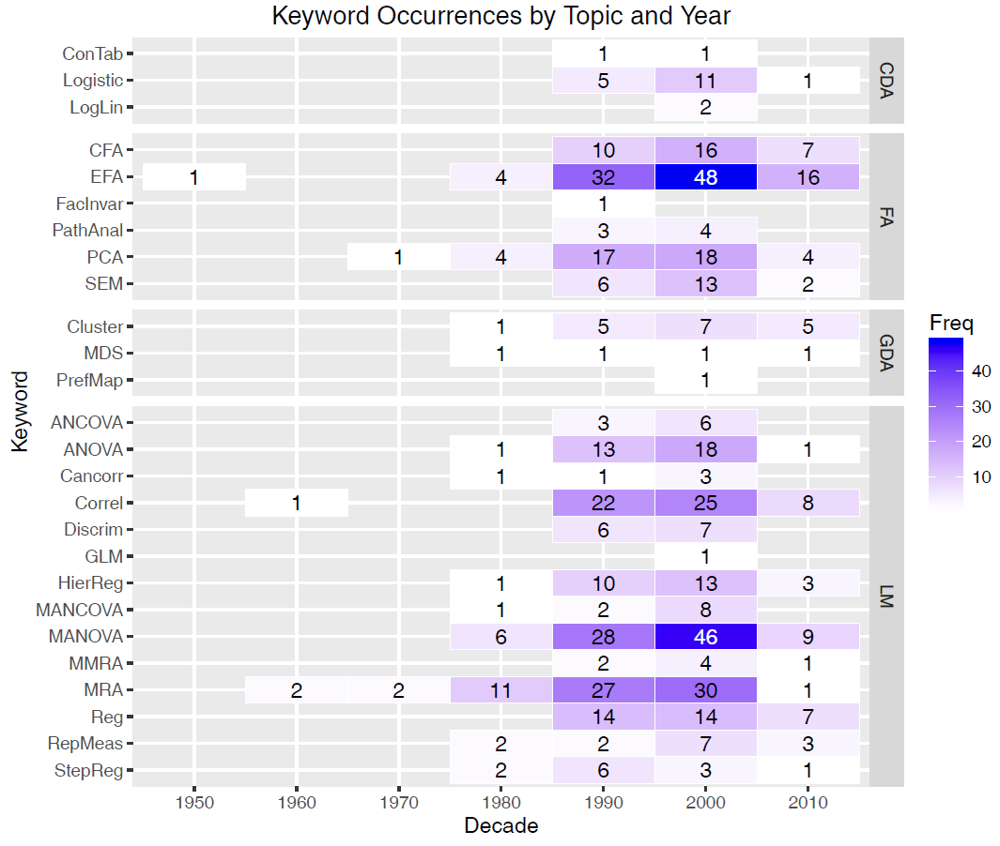
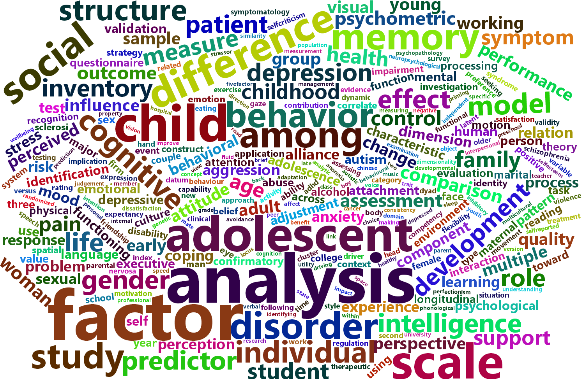

A major goal of this book is to introduce you to multivariate thinking in research design and data analysis. This is accomplished with a collection of powerful graphical methods designed to make it easier to understand and communicate results when there are multiple response variables to be considered together. However, these methods are somewhat more complex than the standard univariate ones, so it is worth considering these questions: Why should you to go to this trouble? What’s in it for me?
1.1 Why use a multivariate design?
The first important point is that reality in many research domains is inherently multivariate, particularly in the social and behavioral sciences. Theoretical constructs such as “depression”, “academic achievement”, “self-concept”, “happiness” or “perfectionism” can often be measured by different scales, or have been identified to have more than one aspect or context worthy of study.
Conceptual advantages
Analyzing these together from a multivariate approach can reveal relationships completely missed or ignored by simpler univariate analyses. Theory is strengthened and becomes more nuanced from a multivariate perspective.
You can understand each of those terms, but actually all of these constructs are inherently multidimensional. The idea of “self-concept”, for instance is comprised of all the beliefs that an individual has about him/herself. These include physical, social, intellectual, family, emotional, and professional/academic domains, which reflect how individuals perceive their bodies, their roles in society, their abilities, their emotional responses, their familial connections, and their competencies in work and school.
Even something simpler, like academic achievements of adolescents, aged 10–16 is comprised of measures of their knowledge and performance in the domains of reading, mathematics, science, history, etc. Say we want to assess the influence of predictors such as parent encouragement, their socioeconomic status and school environmental variables on these outcomes. In a comprehensive study, the following questions are of interest:
Do predictors (parental encouragement, …) affect all of these outcomes? Or do some of these have weak or null effects?
Do they affect them in the same or different ways? That is, do their effects tend to go in the same directions?
How many different aspects of academic achievement can be distinguished in the predictors? Equivalently, is academic achievement unidimensional or multidimensional in relation to the predictors?
Similarly, if psychiatric patients in various diagnostic categories are measured on a battery of tests related to social skills and cognitive functioning, we might want to know:
Which measures best discriminate among the diagnostic groups?
Which measures are most predictive of positive outcomes?
Further, how are the relationships between the outcomes affected by the predictors?
Such questions obviously concern more than just the separate univariate relations of each response to the predictors. Equally, perhaps more importantly, are questions of how the response variables are predicted jointly considering their correlations that a multivariate approach can reveal.
What about SEM?
Structural equation modeling (SEM) offers another route to explore and analyze the relationships among multiple predictors and multiple responses. They have the advantage of being able to test potentially complex systems of linear equations in very flexible ways. However, these methods are often far removed from data analysis per se because they typically start with data summaries such as means and covariance matrices. The raw data is nicely bundled up in these summaries, but consequently there is little room to learn from features such as non-linear relations, interesting clusters, or anomalous observations that might threaten the validity of a proposed model. But see Prokofieva et al. (2023) for an approach (ESEM) using R that combines exploratory analysis with standard SEM, or Brandmaier et al. (2014) for an approach combining SEM and decision trees to allow data-driven refinement of models.
Moreover, except for path diagrams, they usually offer little in the way of visualization methods to aid in understanding and communicating the results. The graphical methods we describe here can also be useful in a SEM context. For example, multivariate multiple regression models (Section 10.6) and canonical correlation (Section 11.10) can be used to explore relationships among the observed variables used in a SEM, but in a data-centric way.
Statistical advantages
A second important point is that a multivariate modeling approach can offer statistical advantages:
- They can have increased statistical power to detect a significant effect, because multivariate tests pool the strength of effects across a collection of positively related response variables.
- This easily avoids inflated Type I error rates (false positives) from multiple separate tests on each of the outcomes.
- We gain deeper insights into how outcome variables vary together.
- With more than a few outcome variables dimension reduction methods offer views of the data and model in 2D plots that capture their essence.
1.1.1 Multivariate vs. multivariable methods
multivariate \(\ne\) multivariable
“Multi-” terminology is important. In this era of multivitamins, multitools, multifactor authentication and even the multiverse, it is well to understand the distinction between multivariate and multivariable methods as these terms are generally used and as I use them here in relation to statistical methods and data visualization. The distinction is simple:
Multi_variable_ methods have a single dependent variable and more than one independent variables or covariates, such as in multiple regression. Multiple regression is the prime example.
Multi_variate_ methods for linear models, such as multivariate multiple regression or multivariate analysis of variance, have more than one dependent, response or outcome variable. Canonical correlation analysis considers the relation between two sets of variables, but treats them symmetrically. Other multivariate methods such as principal components analysis or factor analysis don’t distinguish between independent and dependent, but treat all variables on an equal footing in a single set.
1.1.2 Ubiquity of multivariate research designs
Multivariate response designs are increasingly common in applied behavioral and social science research, and are utilized to analyze a wide range of phenomena. For instance, as an introductory exercise, graduate students enrolled in a multivariate data analysis course1 in the Psychology Department at York University between 1990 and 2015 were asked to scan one or more journals in their area and to find at least one paper that utilized some form of multivariate analysis.
With an average of 15–20 students per year and over approximately 20 years, this yielded a bibliographic database containing 405 exemplars (Friendly & 6140 Members, 2012). These used a variety of multivariate and supplementary univariate methods, ranging from MANOVA to path analysis, from canonical correlation to multidimensional scaling, which were categorized by statistical method using keyword terms.
Overall, MANOVA, factor analysis, multiple regression, correlation, and principal components analysis were utilized the most frequently. See Figure 1.1 for a summary of these results, using a heatmap tabular display of frequencies by time. An overall categorization pertaining to the type of multivariate model used (CDA = Categorical data analysis, FA = Factor analysis, GDA = Geometric data analysis, and LM = Linear models) is shown in the right margin. This is clearly not a representative sample of the literature, but it does illustrate an increase of articles deemed noteworthy over time.
Further, a content analysis of the article titles reveals the variation in topics discussed. For instance, Figure 1.2 is a wordcloud showing the 50 most frequently-used words, with size proportional to occurrence. While a few of the terms are analytic (e.g., the most frequently used term is “analysis”, with 33 occurrences), others showcase the breadth of psychological research, as personality, factor, social, memory, children, cognitive, behavior, all appear in the top 15, with 14 or more appearances each.

1.2 Linear models: Univariate to multivariate
The path to multivariate thinking in this book is eased by the simplicity of extending univariate models to multivariate ones in notation and computation. For classical linear models for ANOVA and regression, the step from a univariate model for a single response, \(y\), to a multivariate one for a collection of \(p\) responses, \(\mathbf{y}\) is conceptually very easy. That’s because the univariate model with \(q\) predictors,
\[y_i = \beta_0 + \beta_1 x_1 + \beta_2 x_2 + \dots + \beta_q x_q + \epsilon_i \;, \]
when cast in matrix terms,
\[ \mathbf{y} = \mathbf{X} \; \mathbf{\beta} + \mathbf{\epsilon}\;, \quad\mbox{ with }\quad \mathbf{\epsilon} \sim \mathcal{N} (0, \sigma^2 \mathbf{I}) \;, \]
generalizes directly to an analogous multivariate linear model (MLM),
\[ \mathbf{Y} = [\mathbf{y_1}, \mathbf{y_2}, \dots, \mathbf{y_p}] = \mathbf{X} \; \mathbf{B} + \boldsymbol{\Large\varepsilon}\quad\mbox{ with }\quad \boldsymbol{\Large\varepsilon}\sim \mathcal{N} (\mathbf{0}, \mathbf{\Sigma}) \; , \]
for multiple responses (as will be discussed in detail in Chapter 10). The design matrix, \(\mathbf{X}\) remains the same, and the vector \(\beta\) of coefficients simply becomes a matrix \(\mathbf{B}\), with one column for each of the \(p\) outcome variables.
Computationally, all of these are handled by a single R function, lm(). Methods for the resulting "lm" objects (also of class mlm" for the multivariate case) provide general means for analysis and graphics and have been developed widely in various R packages.
Happily as well, hypothesis tests for the MLM are also straight-forward generalizations of the familiar \(F\) and \(t\)-tests for univariate response models. Moreover, there is a rich geometry underlying these generalizations (Friendly et al., 2013) which we can exploit for understanding and visualization in Chapter 11.
1.3 Visualization is harder
However, with two or more response variables, visualizations for multivariate models are not as simple as they are for their univariate counterparts. These include plots for understanding the effects of predictors, model parameters, or model diagnostics. Consequently, the results of such studies are often explored and discussed solely in terms of coefficients and significance, and visualizations of the relationships are only provided for one response variable at a time, if at all. This tradition can mask important nuances, and lead researchers to draw erroneous conclusions.
The aim of this book is to describe and illustrate some central methods that we have developed over the last thirty years that aid in the understanding and communication of the results of multivariate models [Friendly:94a; Friendly:02:corrgram; Friendly (2007); Friendly & Meyer (2016)]. These methods for quantitative data rely on data ellipsoids as simple, minimally sufficient visualizations of variance that can be shown in 2D and 3D plots. As will be demonstrated, the Hypothesis-Error (HE) plot framework (Section 11.1) applies this idea to the results of multivariate tests of linear hypotheses.
Further, in the case where there are more than just a few outcome variables, the important nectar of their relationships to predictors can often be distilled in a multivariate juicer— a projection of the multivariate relationships to the predictors in the low-D space that captures most of the flavor. This idea can be applied using canonical correlation plots and with canonical discriminant HE plots (Section 11.7).
TODO: explain relevance of this fig.

1.4 Problems in understanding and communicating MLM results
In my consulting practice within the Statistical Consulting Service at York University, I see hundreds of clients each year ranging from advanced undergraduate thesis students, to graduate students and faculty from a variety of fields. Initially, most clients used SAS or SPSS, but now most use R or Stata for their analyses. Over the last three decades, and across each of these groups, I have noticed an increasing desire to utilize multivariate methods. As researchers are exposed to the utility and power of multivariate tests, they see them as an appealing alternative to running many univariate ANOVAs or multiple regressions for each response variable separately.
However, multivariate analyses are more complicated than such approaches, especially when it comes to understanding and communicating results. Output is typically voluminous, and researchers will often get lost in the numbers. While software in SAS, SPSS and R make tabular summary displays easy, these often obscure the findings that researchers are most interested in. The most common analytic oversights that I have observed are:
Atomistic model checking: Researchers have mostly learned the assumptions (the Holy Trinity of normality, constant variance and independence) of univariate linear models, but then apply univariate tests (e.g., Shapiro-Wilk) and diagnostic plots (normal QQ plots) to every predictor and every response. Instead, I recommend more comprehensive graphical methods like scale-location and influence plots (?sec-diagnostic-plots) and plots like chi-square QQ plots (?sec-model-diagnostics-MLM) for multivariate models.
Bonferroni everywhere: Faced with the task of reporting the results for multiple response measures and a collection of predictors for each, a common tendency is to run (and sometimes report) each of the separate univariate response models and then apply a correction for multiple testing. Not only is this confusing and awkward to report, but it is largely unnecessary because the multivariate tests provide protection for multiple testing. Instead, I emphasize thinking about substantive questions concerning differences among groups and testing these with contrasts (Section 5.1.3) and linear hypotheses (Section 10.3.1).
Reverting to univariate visualizations: To display results, SPSS and SAS make some visualization methods available through menu choices or syntax, but usually these are the wrong (or at least unhelpful) choices, in that they generate separate univariate graphs for the individual responses.
This book discusses a few essential procedures for multivariate linear models, how their interpretation can be aided through the use of well-crafted (though novel) visualizations, and provides replicable sample code in R to showcase their use in applied behavioral research.
The web pages for this course can be found at [http://friendly.apps01.yorku.ca/psy6140/]. I last taught this in 2016–2017.↩︎